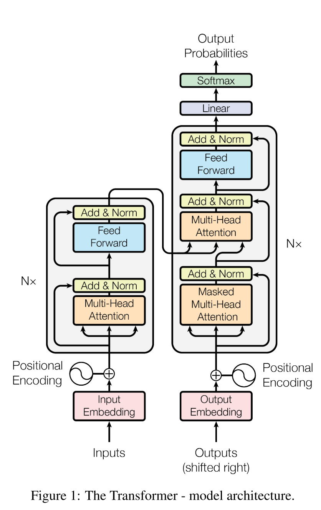
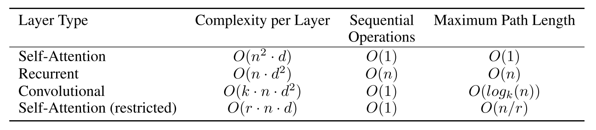
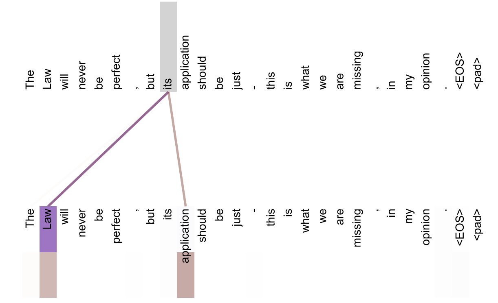

简介
今天读的是大名鼎鼎的BERT-------的组件之一Transformer，出自论文Google团队2017年的论文《Attention Is All You Need》。与传统的GRU、LSTM等相比，Transformer只使用注意力机制来建模输入与输出间的依赖关系，并支持并行化。论文在机器翻译上进行了实验，Transfomer达到了更好的效果，因此自提出以来，就得到了极为广泛的关注。
题外话
之前由于换电脑的原因，断更了一段时间。BERT与Transformer的论文之前也粗读过一两次，还是有些一知半解，正好趁这个周末再复习总结一下，记录在博客里。希望我的博客能对你有所帮助。
模型结构
Transformer使用的仍然是encoder-decoder架构，但与RNN等自回归模型不同，Transformer使用的是堆叠的多头注意力机制，全连接层等，其模型结构如下所示：

左侧的为单个编码器的结构，第一层为多头注意力、残差层与层标准化，第二层是前馈神经网络。编码网络是由若干个编码器堆叠而成的，原论文中N=6，嵌入向量维度为512。
右侧为单个解码器的结构，主要在编码器的基础上，加入了一个Masked的多头注意力机制，用以保证每个时间步的输出只已知已经输出的信息。同样的，解码网络也有6个解码器组成。
注意力机制
多头注意力机制可谓是Transformer的核心，详细过程可以参考图解Transformer完整版。这里只做核心部分介绍，单头计算过程为： \[ Attention(Q,K,V)=softmax(\frac{QK^\intercal}{\sqrt{d_k}})V \] Q，K，V分别为查询、键、值矩阵，由词嵌入向量矩阵映射得出。多头注意力机制使用点乘计算相似度，不同的是，这里除以了一个标量\(\sqrt{d_k}\)。这个标量是softmax的温度系数，由于点积结果方差可能很大，可能会存在梯度过小无法正常更新的情况。除以一个标量能够使得概率分布更加均匀。这一部分可以参考学习下softmax的温度系数。
作者发现，相较于仅使用一个注意力机制，使用多个注意力机制并将其拼接能够拥有更好的效果。在论文中，作者使用8个注意力机制，每个注意力机制的输出为512/8=64维嵌入向量。
注意力机制的使用
多头注意力机制以三种方式在模型中使用：
- 编码器与解码器间的注意力：查询q来自解码器，键K与值V来自编码器。这里的注意力机制用以在输出的每一步关注在输入序列的不同部分，与seq2seq的注意力机制相似、
- 编码器内的自注意力：查询、键、值均来自编码器。输入序列的每个位置可以得到到整个输入序列的信息。
- 解码器内的掩码自注意力：查询、键、值均来自解码器。为了保证解码器只能获得已输出的部分序列的信息，将当前位置之后位置的标量化点积设置为\(-\infty\)，进而经过softmax后概率值为0。
前馈神经网络
在编码器和解码器中的前馈神经网络，搭配relu激活函数来为模型构造非线性计算。计算过程如下所示： \[ FFN(x)=\max(0,xW_1+b_1)W2+b_2 \] 其中，输入和输出的维度均为512，隐藏层维度为1024。另外，前馈神经网络在每个层内不共享参数，换而言之，它们的参数是独立的。
位置编码
由于Transformer中不存在RNN中的自回归结构，输入序列的不同位置是等价的。为了编码位置信息，作者引入了位置编码，使用sin与cos函数： \[ PE_{(pos,2i)}=\sin(pos/10000^{2i/d_{model}}) \]
\[ PE_{(pos,2i+1)}=\cos(pos/10000^{2i/d_{model}}) \]
其中，pos为位置，i为向量维度。作者称选取三角函数的原因是假设这样可以更好地使模型学到相对位置关系，对于任意固定的偏移k，\(PE_{pos+k}\)可以表示为\(PE_{pos}\)的线性函数。另外，作者还尝试了学习位置编码的方式，实验对比显示，二者结果差别不大。因此作者最终选择了上述编码方式，因为它可以处理更长的序列。
为什么使用自注意力机制
论文从计算时间复杂度、序列操作数、最长路径长度三方面对比了自注意力机制、RNN、CNN以及受限的自注意力机制，结果如下：

这一部分计算过程论文没有给出，我参考了Transformer/CNN/RNN的对比（时间复杂度，序列操作数，最大路径长度），这里简单介绍一下。
计算（时间）复杂度
计算复杂度主要取决于计算的规模，以矩阵乘法为例，形状为NxM的矩阵与形状为MxP的矩阵相乘，得到一个NxP的矩阵。结果矩阵中的每个元素为M维向量内积的结果，进行M次乘法，并求和。所以整个矩阵乘法的复杂度为\(O(NMP)\)。
自注意力机制
\[ Attention(Q,K,V)=softmax(\frac{QK^\intercal}{\sqrt{d_k}})V \]
其中，Q，K分别为nxd与dxn的矩阵，\(QK^\intercal\)的复杂度为\(O(n^2d)\)，softmax的复杂度为\(O(n^2)\)，加权求和的矩阵形状分别为nxn与nxd，复杂度为\(O(n^2d)\)，因此总复杂度为\(O(n^2d)\)。受限自注意力机制与之同理，区别在于它只使用查询最近的k个
RNN
\[ h_t=f(Ux_t+Wh_{t-1}) \]
其中，U与x的形状分别为dxd与dx1（假设隐藏状态与输入维度均为d），复杂度为\(O(d^2)\)，W与h的形状分别为dxd与dx1，复杂度同样为\(O(d^2)\)。对于长度为n的序列，总复杂度为\(O(nd^2)\)。
CNN
将输入序列进行padding后，总共需要n次卷积，每次卷积计算量为kxd，假设步长为1，单个卷积核复杂度为\(O(nkd)\)。为了保证维度相同，需要使用d个卷积核，总复杂度为\(O(nkd^2)\)
序列操作数
序列操作数主要衡量了并行化的支持情况，只有RNN需要串行地完成n次序列操作，其他模型均支持并行化。
最长路径长度
最长路径为序列中首尾token在模型中的路径，其长度越长，依赖越不容易被捕捉到。对于自注意力机制，序列中的任意两个元素均可以看作直接相连，路径长度为\(O(1)\)。而RNN中，第一个token的信息需要进行n次迭代才能到达最后一个token，最大路径长度即为\(O(n)\)。CNN中，通过若干个卷积层来获取不同位置的信息，每个卷积层（论文中使用的是空洞卷积）相当于让序列信息浓缩了k倍（卷积层的输出中的每个位置都有输入中k个位置的信息），最大路径长度为\(O(log_kn)\)。受限的自注意力机制与连续卷积类似，每次卷积相当于可以获取连续k个位置的信息，最大路径长度为\(O(n/k)\)。
这就基本解释了这个突兀的表格是怎么计算得来的了。那么可以总结自注意力机制的优点是：
- 单层计算量更少。在实际应用中，序列长度n往往小于表征维度d，因此，自注意力机制的单层计算量相较于RNN与CNN都要更小。
- 支持并行化。这个就不说了，全世界都在针对RNN。
- 能够更好地捕捉长距离依赖。相较于CNN与RNN，自注意力机制的最长路径最短。
- 可解释性更强。作者将注意力机制的概率分布展示如下，证明多头注意力的多个头完成了与句子语义与结构相关不同的工作。

上图是作者给出的多头注意力的例子，使用了两个头。对于its这个单词，得到了非常尖锐的概率分布，its主要与law与application相关联，一个头捕获到了its指代的主体law，一个头捕获到了its的目标application。个人感觉这个效果也太过于理想了。。。可能这就是Transformer吧。
总结
这篇论文提出了完全依赖于注意力机制的序列转换模型Transformer，相较于RNN，它有着可并行化、解释性更强、单层参数更少等优点。在机器翻译上取得了state-of-the-art，在英语成分分析上也取得了比RNN更优的结果。